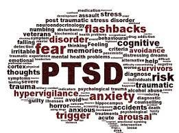
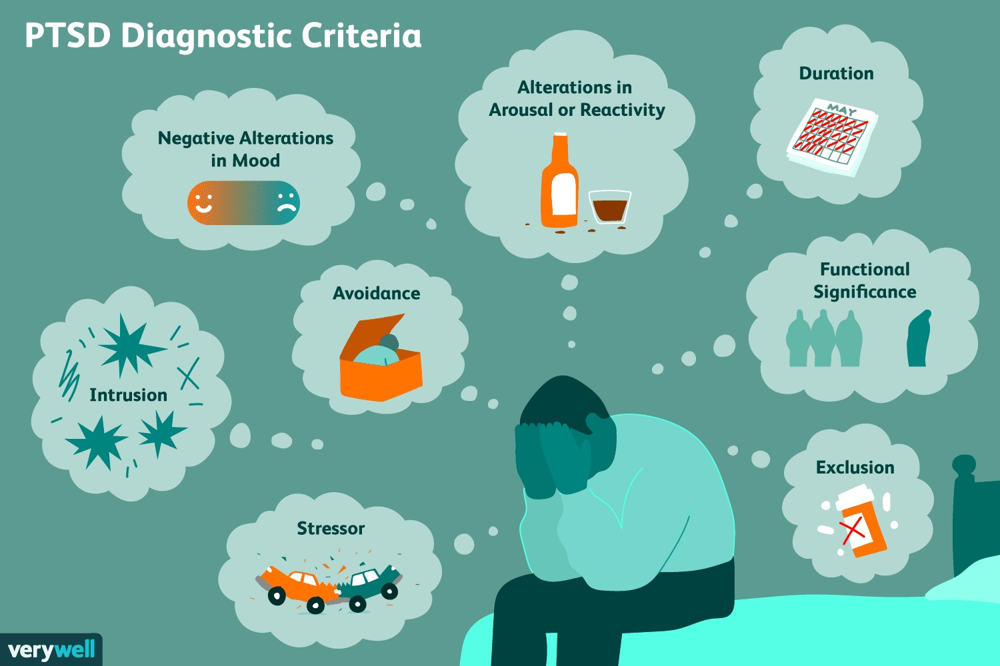
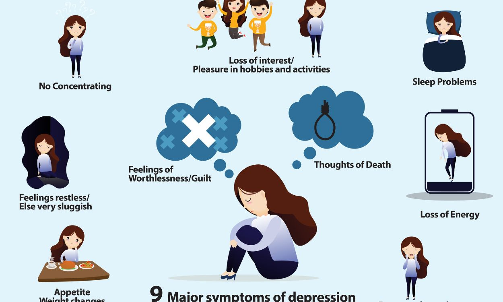

What is PTSD ?
- Re-living the traumatic event through unwanted and recurring memories, flashbacks or vivid nightmares
- exposure to traumatic events at work, including remote exposure
- Psychological therapy, self-help techniques and medication can help people to recover from PTSD
Causes of PTSD
The causes of PTSD are not fully understood There are several theories about the causes of PTSD, including:
- Mental disorders involve significant disturbances in thinking, emotional regulation, or behaviour
- exposure to traumatic events at work, including remote exposure
- abuse, including childhood or domestic abuse.
- serious accidents.
It is possible that several factors interact to trigger the development of OCD. The underlying causes may be further influenced by stressful life events, hormonal changes and personality traits.
Common Symptoms
Common symptoms of mental disorders include...
- Intrusive thoughts such as repeated, involuntary memories; distressing dreams; or flashbacks of the traumatic event.
- Avoidance of people, places, activities, objects, or situations that are reminders of the traumatic event or avoiding remembering, talking, or thinking about the traumatic event.
- Alterations in cognitions and mood, including being unable to remember important aspects of the traumatic event; negative thoughts and feelings about oneself or others
- feelings of anger, guilt or shame; a loss of interest in activities previously enjoyed; and feeling detached or estranged from others
- Changes in arousal and reactivity, including being easily irritated, experiencing angry outbursts; behaving recklessly or in a self-destructive manner.
- being hypervigilant or easily startled; or having difficulties concentrating or sleeping.



Treatment For PTSD
If you encounter someone experiencing a mental health crisis...
- Perform a physical exam
- Use the criteria in the Diagnostic and Statistical Manual of Mental Disorders (DSM-5)
- Do a psychological evaluation
First-Aid For PTSD
If you encounter someone experiencing a mental health crisis...
- Connectedness
- Distract with activities.
- Stay patient and supportive.
- Encourage professional help.
- Offer supportive listening.